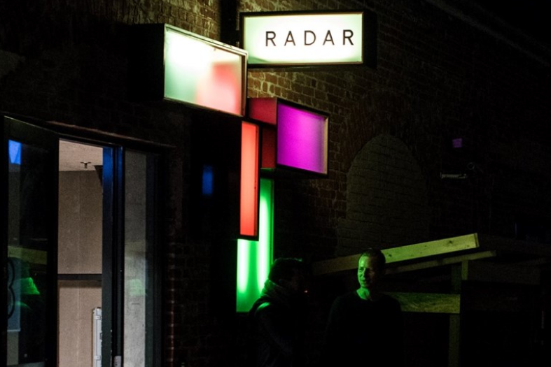

Hvem er vi
Radar er et åbent, netværkende og interagerende spillested, hvor vi lægger stor vægt på at samarbejde med aktører i genrespecifikke miljøer og gennem inddragelse af eksterne koncert- og festivalarrangører. På Radar arbejder vi desuden med udviklingsaktiviteter, rettet mod programudvikling og publikumsudvikling.
Aktiviteterne udmønter sig i en række projekter og arbejdsmetoder som f.eks. #venuehack, Radar_HIGH, Radar_MusicLab, børnekoncerter, det fleksible koncertrum og audiocanvas.
Du kan få et overblik over Radars rum her (åbner Matterport.com i seperat vindue). Læs mere her.